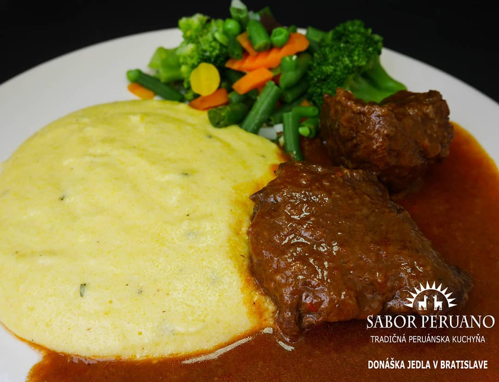

Hovädzie na víne podľa @bratislavasaborperuano — Normy Jedál
Guiso de res al vino con polenta y verduras salteadas. Dusene hovadzie s polentou a so zeleninou. Nase pondelkove menu. #donaskavbratislave #obedovemenu #peruanskejedlo #peruanskakuchyna #hovadzienavine ##comidaperuana #cocinaperuana #guisoderesalvino